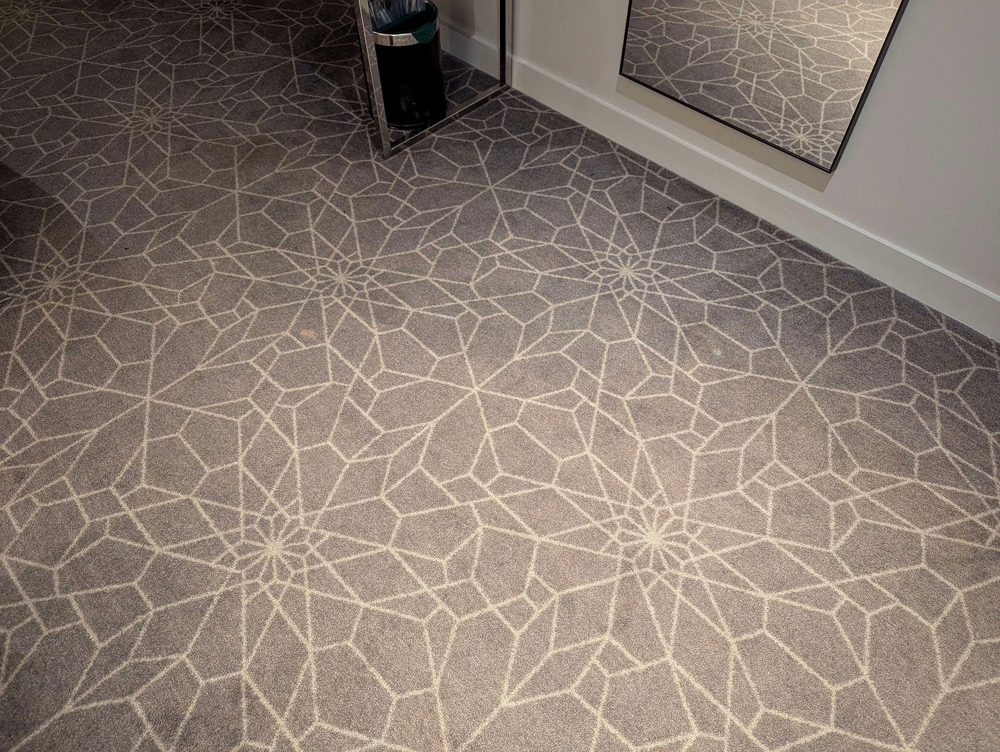
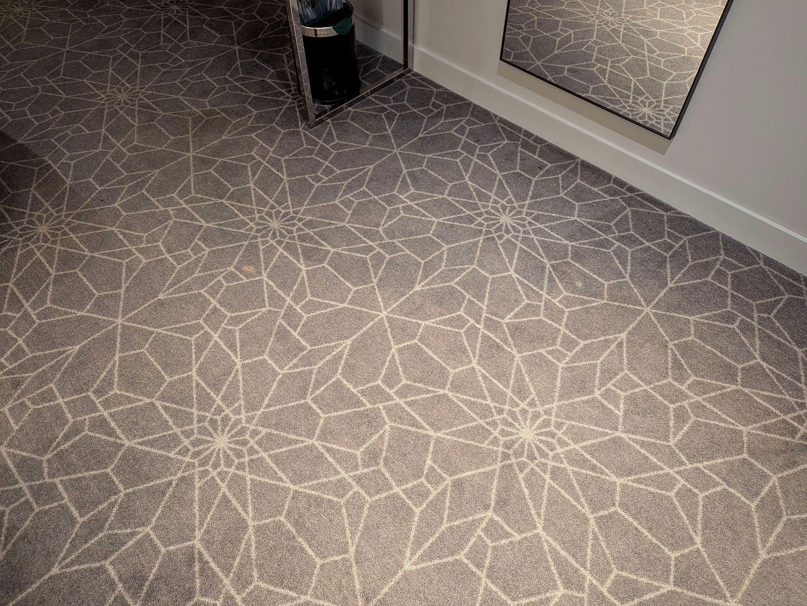

TRIP TO TRIP LAND
Well I sure haven't been doing a very good job at updating this site. I actually went on a big 10 day trip to Italy last September,
I was writing a blog post about it as just kind of a dumping ground for photos and stuff, but I was kind of putting too much effort into
editing all the RAW photos so I didn't touch it for months, Italy just has so many pretty views that I wanted the photos to look good. I'll finish it soon.
I also recently went on a trip to a few places in the UK, namely Edinburgh, Manchester and London, that wasn't quite as grand as Italy, but I still enjoyed my time a lot.
Anyway this isn't about that.
I feel like I had somewhat of an identity crisis recently. I had some experiences being more social in recent months, and I feel like I had missed on a lot of things in life, like I was no longer happy with who I am, as if I'm a worse version of myself and my introversion and shyness are just the result of circumstance opposed to a desire to be like that. Like if someone asked me if I prefer spending time home or going out being social on a weekend, I would instantly say the former, but I feel like that's not who I actually want to be?
As a result I've been trying to be less secluded to my room. I went on trip around the UK, I'm going to go to my first concert in June to see Nine Inch Nails, which I'm very excited for, and then I went on another trip yesterday.
I had never done any drugs before, not weed, nor cigarettes, nor alcohol really until recently a little. I tried smoking years ago and hated it, but I've always been interested in psychedelics. I heard about DMT in my teens and was just kind of fascinated by it, like it's the only way to experience something outworldly, but I was always too scared to do it by myself and I had no experience to build up to that point, but decided I'm either going to just do it or never do it.
Yesterday I took 130ug of LSD after obsessively researching everything about it, looking at god knows how many trip reports from other people. I feel like I was prepared for what to expect, but I don't think it's something that can be explained without just doing it. It was an experience to say the least.
I booked a room at a hotel, placed it on my tongue and I took a silly selfie at the request of a friend with my tongue out. I wasn't really feeling anything for 40 minutes so I thought maybe I had a dud or it wasn't dosed truthfully. I stopped worrying about it and just listened to my favourite song. About halfway into the song I started feeling progressively warmer, like for some reason just moving my legs and feeling my denim jeans and the bed felt nice, and the music sounded like it was around me, like a hug. I wasn't sure if I was having some placebo like... "this is what people say it's like so this is what I must feel", but it felt really, really nice.
When the song ended I stood up to go bathroom, I felt kind of light, like you're walking on a wobbly surface but your balance is fine. As I was peeing I looked at the wall next to me, and it had all this crazy texture and depth to it that swayed around, like I needed to reach out to it to see if it was flat or not. It was then I realized it's not a placebo, I'm definitely tripping.
I just got kind of mesmerized by everything, I probably stared at that wall for like 5 minutes, everything I looked at just had so much texture and depth and vibrance to it. I went back to bed to listen to music, and when I looked at my phone, all the words popped out and had coloured edges and danced around. I was trying to text a friend, but I kept getting stuck looking at my phone every time I had to pause to think what to type next. These are the other things I found most mesmerizing in my room. The shapes just had so much vivid colour and popped out towards me while wobbling around.
 Then I got the WORST text message I think someone could possibly come up with during such a moment, and they never send me texts literally ever. This text message is so ridiculous that it totally spent me spiralling, I could barely look at my phone or text without getting stuck. I got really paranoid, I thought to myself, does this online friend somehow know my family's numbers? Did they send them this selfie of me to get something out of me? Did they find my hiding spot? I couldn't even tell if the text was real despite responding to it, it's so absurd I thought I must be hallucinating it, so I had to send someone a photo of it to know it's real. The timing of this text and my selfie were like some divine intervention.
A friend helped me chill out a little on text and I listened to music more eventually, but this was always at the back of my mind. At this point I think I was at my peak, and I started getting lots of very hard to explain visuals when my eyes were closed if I really spaced out, like I had coloured.. tubes? and shapes intertwining pop in and out of existence, it wasn't extremely clear, but it had colour and it was there, and it pulsated and reacted to my music. Songs with a lot of drum cymbals made the shapes blocky and metallic looking. This song gave me the most vivid images.
Eventually I looked at myself in the massive bedroom mirror, I was kind of hesitant because of posts I read online about it. My face looked odd, like I wasn't me, and my body shape would move and contort like those goofy fun-house mirrors. I'd stare at my face and all the imperfections got enhanced from the texture getting stronger, I did this a couple of times and would go back to listening to music. One of the times I looked at the mirror I did it for longer though more intently, and my face started to become fractals of purple and red, which got darker and darker, the way my hair sweeps to the side became dark and spiky. My face and body just became really dark and I looked like some demonic non-human figure, I know this sounds insane and terrifying, but I just had no reaction to it, like it was just a thing that happens, and I started using it to test how high I am. If I were some stoner I'm sure I'd look for some weird meaning behind it, but I knew I was just out of it.
Shortly after I looked at the time and I couldn't believe it had been hours, I started getting worried about leaving the hotel room and getting home, so my family wouldn't worry about where I am, and I wanted to experience nature outside. I thought I'd be like this all night even though I knew it'd end eventually. I kept trying to build up the courage multiple times to leave the room but would stop.
I eventually built up the courage and actually left and closed the door, only to find myself in the worst fucking hallway conceived of. It had windows on both sides to the outside, which were now reflecting the entire hallway infinitely because it was dark outside. I've never felt so disoriented in my life. I walked down the hallway to find the elevator and I walked the wrong direction, so I turned back around, and I straight up forgot which way I went or how far I went, and I started getting scared someone would see me because there was 0 chance I could act normal. At the time it was moderately terrifying, more than seeing some psychotic mirror demon, but it's really funny to think about now. I got back to my room and felt crazy relief.
I started coming down after this. I originally planned on listening to music, and watching things and going out and experiencing nature but I think I got too overwhelmed by the text, and worrying about my family and it ruined a big chunk of my trip. In a strange way I'm kind of happy with how it turned out though, like I got to experience the really good and some of how it can go badly, so I learned how important it is to have no distractions, and it makes it a funny unique story. I want to do it again, but I feel like I'm now going into it with expectations that I never had before, and I'd be lying if I said it doesn't make it feel more overwhelming to think about. Next time, I hope I have a more purely positive experience.
Finally I left the room 7 hours later, the texture of things still wobbled like my phone and desktop screen, it's not like being drunk, the individual pieces of things themselves move separately. I also felt more emotional and would randomly cry at nothing, all my music also started sounding more muffled, like I was losing clarity.
My room keycard had a really fitting and cute message on it, so I couldn't help but want to keep it, sorry hotel.
I feel like I had somewhat of an identity crisis recently. I had some experiences being more social in recent months, and I feel like I had missed on a lot of things in life, like I was no longer happy with who I am, as if I'm a worse version of myself and my introversion and shyness are just the result of circumstance opposed to a desire to be like that. Like if someone asked me if I prefer spending time home or going out being social on a weekend, I would instantly say the former, but I feel like that's not who I actually want to be?
As a result I've been trying to be less secluded to my room. I went on trip around the UK, I'm going to go to my first concert in June to see Nine Inch Nails, which I'm very excited for, and then I went on another trip yesterday.
I had never done any drugs before, not weed, nor cigarettes, nor alcohol really until recently a little. I tried smoking years ago and hated it, but I've always been interested in psychedelics. I heard about DMT in my teens and was just kind of fascinated by it, like it's the only way to experience something outworldly, but I was always too scared to do it by myself and I had no experience to build up to that point, but decided I'm either going to just do it or never do it.
Yesterday I took 130ug of LSD after obsessively researching everything about it, looking at god knows how many trip reports from other people. I feel like I was prepared for what to expect, but I don't think it's something that can be explained without just doing it. It was an experience to say the least.
I booked a room at a hotel, placed it on my tongue and I took a silly selfie at the request of a friend with my tongue out. I wasn't really feeling anything for 40 minutes so I thought maybe I had a dud or it wasn't dosed truthfully. I stopped worrying about it and just listened to my favourite song. About halfway into the song I started feeling progressively warmer, like for some reason just moving my legs and feeling my denim jeans and the bed felt nice, and the music sounded like it was around me, like a hug. I wasn't sure if I was having some placebo like... "this is what people say it's like so this is what I must feel", but it felt really, really nice.
When the song ended I stood up to go bathroom, I felt kind of light, like you're walking on a wobbly surface but your balance is fine. As I was peeing I looked at the wall next to me, and it had all this crazy texture and depth to it that swayed around, like I needed to reach out to it to see if it was flat or not. It was then I realized it's not a placebo, I'm definitely tripping.
I just got kind of mesmerized by everything, I probably stared at that wall for like 5 minutes, everything I looked at just had so much texture and depth and vibrance to it. I went back to bed to listen to music, and when I looked at my phone, all the words popped out and had coloured edges and danced around. I was trying to text a friend, but I kept getting stuck looking at my phone every time I had to pause to think what to type next. These are the other things I found most mesmerizing in my room. The shapes just had so much vivid colour and popped out towards me while wobbling around.
 Then I got the WORST text message I think someone could possibly come up with during such a moment, and they never send me texts literally ever. This text message is so ridiculous that it totally spent me spiralling, I could barely look at my phone or text without getting stuck. I got really paranoid, I thought to myself, does this online friend somehow know my family's numbers? Did they send them this selfie of me to get something out of me? Did they find my hiding spot? I couldn't even tell if the text was real despite responding to it, it's so absurd I thought I must be hallucinating it, so I had to send someone a photo of it to know it's real. The timing of this text and my selfie were like some divine intervention.
A friend helped me chill out a little on text and I listened to music more eventually, but this was always at the back of my mind. At this point I think I was at my peak, and I started getting lots of very hard to explain visuals when my eyes were closed if I really spaced out, like I had coloured.. tubes? and shapes intertwining pop in and out of existence, it wasn't extremely clear, but it had colour and it was there, and it pulsated and reacted to my music. Songs with a lot of drum cymbals made the shapes blocky and metallic looking. This song gave me the most vivid images.
Eventually I looked at myself in the massive bedroom mirror, I was kind of hesitant because of posts I read online about it. My face looked odd, like I wasn't me, and my body shape would move and contort like those goofy fun-house mirrors. I'd stare at my face and all the imperfections got enhanced from the texture getting stronger, I did this a couple of times and would go back to listening to music. One of the times I looked at the mirror I did it for longer though more intently, and my face started to become fractals of purple and red, which got darker and darker, the way my hair sweeps to the side became dark and spiky. My face and body just became really dark and I looked like some demonic non-human figure, I know this sounds insane and terrifying, but I just had no reaction to it, like it was just a thing that happens, and I started using it to test how high I am. If I were some stoner I'm sure I'd look for some weird meaning behind it, but I knew I was just out of it.
Shortly after I looked at the time and I couldn't believe it had been hours, I started getting worried about leaving the hotel room and getting home, so my family wouldn't worry about where I am, and I wanted to experience nature outside. I thought I'd be like this all night even though I knew it'd end eventually. I kept trying to build up the courage multiple times to leave the room but would stop.
I eventually built up the courage and actually left and closed the door, only to find myself in the worst fucking hallway conceived of. It had windows on both sides to the outside, which were now reflecting the entire hallway infinitely because it was dark outside. I've never felt so disoriented in my life. I walked down the hallway to find the elevator and I walked the wrong direction, so I turned back around, and I straight up forgot which way I went or how far I went, and I started getting scared someone would see me because there was 0 chance I could act normal. At the time it was moderately terrifying, more than seeing some psychotic mirror demon, but it's really funny to think about now. I got back to my room and felt crazy relief.
I started coming down after this. I originally planned on listening to music, and watching things and going out and experiencing nature but I think I got too overwhelmed by the text, and worrying about my family and it ruined a big chunk of my trip. In a strange way I'm kind of happy with how it turned out though, like I got to experience the really good and some of how it can go badly, so I learned how important it is to have no distractions, and it makes it a funny unique story. I want to do it again, but I feel like I'm now going into it with expectations that I never had before, and I'd be lying if I said it doesn't make it feel more overwhelming to think about. Next time, I hope I have a more purely positive experience.
Finally I left the room 7 hours later, the texture of things still wobbled like my phone and desktop screen, it's not like being drunk, the individual pieces of things themselves move separately. I also felt more emotional and would randomly cry at nothing, all my music also started sounding more muffled, like I was losing clarity.
My room keycard had a really fitting and cute message on it, so I couldn't help but want to keep it, sorry hotel.